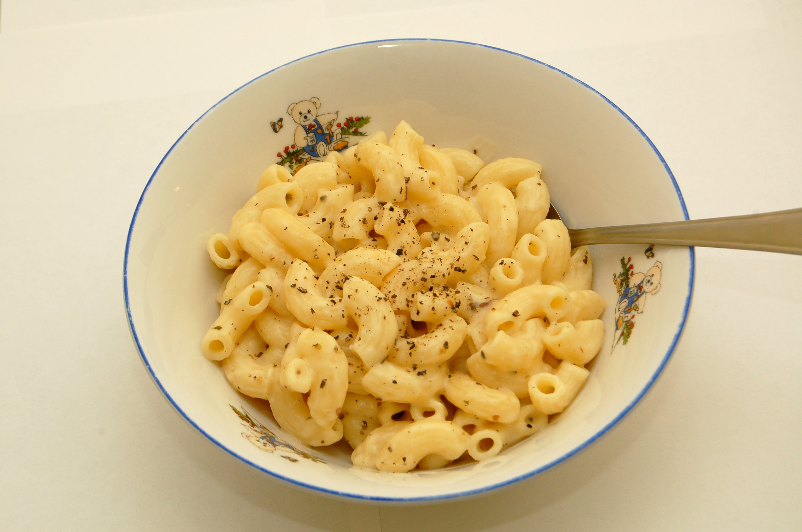

Mac and Cheese

Description
A simple Mac and Cheese Recipe. Can be used as a side dish or on its own.
Ingredients
- 230g elbow macaroni
- 2tbsp butter
- 1/4 cup all purpose flour
- 2 cups milk
- 1 cup shredded Cheddar chees
- 230g cuped processed cheese food
Steps
- Cook macaroni elbow in large pot with salted water
-
Melt butter in a medium pan, whisk flour and stir. Add milk and cook
until thick and bubbly (5 to 7 minutes) Add cheese and keep stirring
until completely melted.
- Mix drained pasta and cheese sauce in a large bowl.
-
Pour mixture in a greased casserole dish. Bake in preheated oven (175°C)
for 30 minutes.